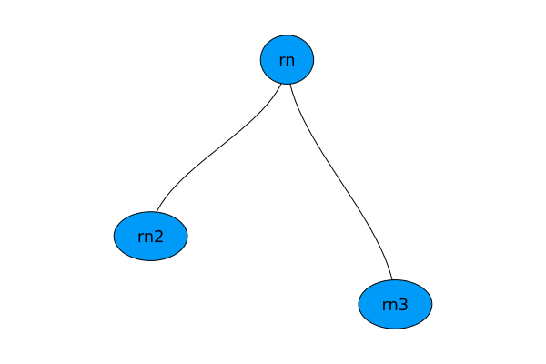
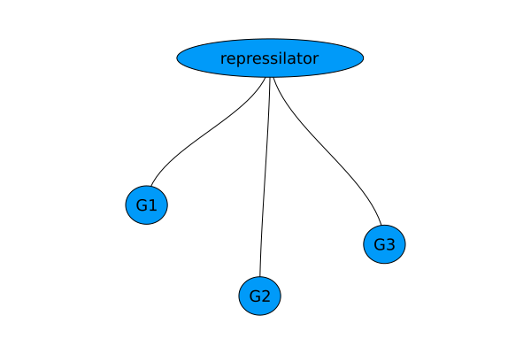
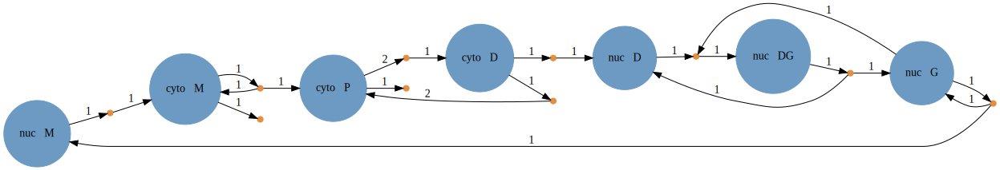

Compositional Modeling of Reaction Systems
Catalyst supports the construction of models in a compositional fashion, based on ModelingToolkit's subsystem functionality. In this tutorial we'll see how we can construct the earlier repressilator model by composing together three identically repressed genes, and how to use compositional modeling to create compartments.
A note on completeness
Catalyst ReactionSystem can either be complete or incomplete. When created using the @reaction_network DSL they are created as complete. Here, only complete ReactionSystems can be used to create the various problem types (e.g. ODEProblem). However, only incomplete ReactionSystems can be composed using the features described below. Hence, for compositional modeling, ReactionSystem must be created as incomplete, and later set to complete before simulation.
To create a ReactionSystems for use in compositional modeling via the DSL, simply use the @network_component macro instead of @reaction_network:
using Catalyst
degradation_component = @network_component begin
d, X --> 0
end\[ \begin{align*} \mathrm{X} &\xrightarrow{d} \varnothing \end{align*} \]
Alternatively one can just build the ReactionSystem via the symbolic interface.
@parameters d
t = default_t()
@species X(t)
rx = Reaction(d, [X], nothing)
@named degradation_component = ReactionSystem([rx], t)\[ \begin{align*} \mathrm{X} &\xrightarrow{d} \varnothing \end{align*} \]
We can test whether a system is complete using the ModelingToolkit.iscomplete function:
ModelingToolkit.iscomplete(degradation_component)falseTo mark a system as complete, after which it should be considered as representing a finalized model, use the complete function
degradation_component_complete = complete(degradation_component)
ModelingToolkit.iscomplete(degradation_component_complete)trueCompositional modeling tooling
Catalyst supports two ModelingToolkit interfaces for composing multiple ReactionSystems together into a full model. The first mechanism allows for extending an existing system by merging in a second system via the extend command
using Catalyst
basern = @network_component rn1 begin
k, A + B --> C
end
newrn = @network_component rn2 begin
r, C --> A + B
end
@named rn = extend(newrn, basern)\[ \begin{align*} \mathrm{A} + \mathrm{B} &\xrightleftharpoons[r]{k} \mathrm{C} \end{align*} \]
Here we extended basern with newrn giving a system with all the reactions. Note, if a name is not specified via @named or the name keyword then rn will have the same name as newrn.
The second main compositional modeling tool is the use of subsystems. Suppose we now add to basern two subsystems, newrn and newestrn, we get a different result:
newestrn = @network_component rn3 begin
v, A + D --> 2D
end
@named rn = compose(basern, [newrn, newestrn])\[ \begin{align*} \mathrm{A} + \mathrm{B} &\xrightarrow{k} \mathrm{C} \\ \mathrm{\mathtt{rn2.C}} &\xrightarrow{\mathtt{rn2.r}} \mathrm{\mathtt{rn2.A}} + \mathrm{\mathtt{rn2.B}} \\ \mathrm{\mathtt{rn3.A}} + \mathrm{\mathtt{rn3.D}} &\xrightarrow{\mathtt{rn3.v}} 2 \mathrm{\mathtt{rn3.D}} \end{align*} \]
Here we have created a new ReactionSystem that adds newrn and newestrn as subsystems of basern. The variables and parameters in the sub-systems are considered distinct from those in other systems, and so are namespaced (i.e. prefaced) by the name of the system they come from.
We can see the subsystems of a given system by
ModelingToolkit.get_systems(rn)2-element Vector{Any}:
ReactionSystem{Catalyst.NetworkProperties{Int64, SymbolicUtils.BasicSymbolic{Real}}}(Union{Equation, Reaction}[r, C --> A + B], Reaction[r, C --> A + B], t, SymbolicUtils.BasicSymbolic{Real}[], SymbolicUtils.BasicSymbolic{Real}[C(t), A(t), B(t)], SymbolicUtils.BasicSymbolic{Real}[C(t), A(t), B(t)], Any[r], Dict{Symbol, Any}(:A => A(t), :B => B(t), :r => r, :C => C(t)), Equation[], :rn2, Any[], Dict{Any, Any}(), nothing, Conserved Equations:
, true, ModelingToolkit.SymbolicContinuousCallback[], ModelingToolkit.SymbolicDiscreteCallback[], nothing, false)
ReactionSystem{Catalyst.NetworkProperties{Int64, SymbolicUtils.BasicSymbolic{Real}}}(Union{Equation, Reaction}[v, A + D --> 2*D], Reaction[v, A + D --> 2*D], t, SymbolicUtils.BasicSymbolic{Real}[], SymbolicUtils.BasicSymbolic{Real}[A(t), D(t)], SymbolicUtils.BasicSymbolic{Real}[A(t), D(t)], Any[v], Dict{Symbol, Any}(:A => A(t), :D => D(t), :v => v), Equation[], :rn3, Any[], Dict{Any, Any}(), nothing, Conserved Equations:
, true, ModelingToolkit.SymbolicContinuousCallback[], ModelingToolkit.SymbolicDiscreteCallback[], nothing, false)They naturally form a tree-like structure
using Plots, GraphRecipes
plot(TreePlot(rn), method=:tree, fontsize=12, nodeshape=:ellipse)
We could also have directly constructed rn using the same reaction as in basern as
t = default_t()
@parameters k
@species A(t), B(t), C(t)
rxs = [Reaction(k, [A,B], [C])]
@named rn = ReactionSystem(rxs, t; systems = [newrn, newestrn])\[ \begin{align*} \mathrm{A} + \mathrm{B} &\xrightarrow{k} \mathrm{C} \\ \mathrm{\mathtt{rn2.C}} &\xrightarrow{\mathtt{rn2.r}} \mathrm{\mathtt{rn2.A}} + \mathrm{\mathtt{rn2.B}} \\ \mathrm{\mathtt{rn3.A}} + \mathrm{\mathtt{rn3.D}} &\xrightarrow{\mathtt{rn3.v}} 2 \mathrm{\mathtt{rn3.D}} \end{align*} \]
Catalyst provides several different accessors for getting information from a single system, or all systems in the tree. To get the species, parameters, and reactions only within a given system (i.e. ignoring subsystems), we can use
Catalyst.get_species(rn)3-element Vector{SymbolicUtils.BasicSymbolic{Real}}:
A(t)
B(t)
C(t)ModelingToolkit.get_ps(rn)1-element Vector{Any}:
kCatalyst.get_rxs(rn)1-element Vector{Reaction}:
k, A + B --> CTo see all the species, parameters and reactions in the tree we can use
species(rn) # or unknowns(rn)8-element Vector{SymbolicUtils.BasicSymbolic{Real}}:
A(t)
B(t)
C(t)
rn2₊C(t)
rn2₊A(t)
rn2₊B(t)
rn3₊A(t)
rn3₊D(t)parameters(rn)3-element Vector{Any}:
k
rn2₊r
rn3₊vreactions(rn) # or equations(rn)3-element Vector{Reaction}:
k, A + B --> C
rn2₊r, rn2₊C --> rn2₊A + rn2₊B
rn3₊v, rn3₊A + rn3₊D --> 2*rn3₊DIf we want to collapse rn down to a single system with no subsystems we can use
flatrn = Catalyst.flatten(rn)\[ \begin{align*} \mathrm{A} + \mathrm{B} &\xrightarrow{k} \mathrm{C} \\ \mathrm{\mathtt{rn2.C}} &\xrightarrow{\mathtt{rn2.r}} \mathrm{\mathtt{rn2.A}} + \mathrm{\mathtt{rn2.B}} \\ \mathrm{\mathtt{rn3.A}} + \mathrm{\mathtt{rn3.D}} &\xrightarrow{\mathtt{rn3.v}} 2 \mathrm{\mathtt{rn3.D}} \end{align*} \]
where
ModelingToolkit.get_systems(flatrn)Any[]More about ModelingToolkit's interface for compositional modeling can be found in the ModelingToolkit docs.
Compositional model of the repressilator
Let's apply the tooling we've just seen to create the repressilator in a more modular fashion. We start by defining a function that creates a negatively repressed gene, taking the repressor as input
function repressed_gene(; R, name)
@network_component $name begin
hillr($R,α,K,n), ∅ --> m
(δ,γ), m <--> ∅
β, m --> m + P
μ, P --> ∅
end
endHere we assume the user will pass in the repressor species as a ModelingToolkit variable, and specify a name for the network. We use Catalyst's interpolation ability to substitute the value of these variables into the DSL (see Interpolation of Julia Variables). To make the repressilator we now make three genes, and then compose them together
t = default_t()
@species G3₊P(t)
@named G1 = repressed_gene(; R=ParentScope(G3₊P))
@named G2 = repressed_gene(; R=ParentScope(G1.P))
@named G3 = repressed_gene(; R=ParentScope(G2.P))
@named repressilator = ReactionSystem(t; systems=[G1,G2,G3])\[ \begin{align*} \varnothing &\xrightleftharpoons[\mathtt{G1.\delta}]{\mathrm{hillr}\left( \mathtt{G3.P}, \mathtt{G1.\alpha}, \mathtt{G1.K}, \mathtt{G1.n} \right)} \mathrm{\mathtt{G1.m}} \\ \varnothing &\xrightarrow{\mathtt{G1.\gamma}} \mathrm{\mathtt{G1.m}} \\ \mathrm{\mathtt{G1.m}} &\xrightarrow{\mathtt{G1.\beta}} \mathrm{\mathtt{G1.m}} + \mathrm{\mathtt{G1.P}} \\ \mathrm{\mathtt{G1.P}} &\xrightarrow{\mathtt{G1.\mu}} \varnothing \\ \varnothing &\xrightleftharpoons[\mathtt{G2.\delta}]{\mathrm{hillr}\left( \mathtt{G1.P}, \mathtt{G2.\alpha}, \mathtt{G2.K}, \mathtt{G2.n} \right)} \mathrm{\mathtt{G2.m}} \\ \varnothing &\xrightarrow{\mathtt{G2.\gamma}} \mathrm{\mathtt{G2.m}} \\ \mathrm{\mathtt{G2.m}} &\xrightarrow{\mathtt{G2.\beta}} \mathrm{\mathtt{G2.m}} + \mathrm{\mathtt{G2.P}} \\ \mathrm{\mathtt{G2.P}} &\xrightarrow{\mathtt{G2.\mu}} \varnothing \\ \varnothing &\xrightleftharpoons[\mathtt{G3.\delta}]{\mathrm{hillr}\left( \mathtt{G2.P}, \mathtt{G3.\alpha}, \mathtt{G3.K}, \mathtt{G3.n} \right)} \mathrm{\mathtt{G3.m}} \\ \varnothing &\xrightarrow{\mathtt{G3.\gamma}} \mathrm{\mathtt{G3.m}} \\ \mathrm{\mathtt{G3.m}} &\xrightarrow{\mathtt{G3.\beta}} \mathrm{\mathtt{G3.m}} + \mathrm{\mathtt{G3.P}} \\ \mathrm{\mathtt{G3.P}} &\xrightarrow{\mathtt{G3.\mu}} \varnothing \end{align*} \]
Notice, in this system each gene is a child node in the system graph of the repressilator
plot(TreePlot(repressilator), method=:tree, fontsize=12, nodeshape=:ellipse)
In building the repressilator we needed to use two new features. First, we needed to create a symbolic variable that corresponds to the protein produced by the third gene before we created the corresponding system. We did this via @variables G3₊P(t). We also needed to set the scope where each repressor lived. Here ParentScope(G3₊P), ParentScope(G1.P), and ParentScope(G2.P) signal Catalyst that these variables will come from parallel systems in the tree that have the same parent as the system being constructed (in this case the top-level repressilator system).
Compartment-based models
Finally, let's see how we can make a compartment-based model. Let's create a simple eukaryotic gene expression model with negative feedback by protein dimers. Transcription and gene inhibition by the protein dimer occurs in the nucleus, translation and dimerization occur in the cytosol, and nuclear import and export reactions couple the two compartments. We'll include volume parameters for the nucleus and cytosol, and assume we are working with species having units of number of molecules. Rate constants will have their common concentration units, i.e. if $V$ denotes the volume of a compartment then
| Reaction Type | Example | Rate Constant Units | Effective rate constant (units of per time) |
|---|---|---|---|
| Zero order | $\varnothing \overset{\alpha}{\to} A$ | concentration / time | $\alpha V$ |
| First order | $A \overset{\beta}{\to} B$ | (time)⁻¹ | $\beta$ |
| Second order | $A + B \overset{\gamma}{\to} C$ | (concentration × time)⁻¹ | $\gamma/V$ |
In our model we'll therefore add the conversions of the last column to properly account for compartment volumes:
# transcription and regulation
nuc = @network_component nuc begin
α, G --> G + M
(κ₊/V,κ₋), D + G <--> DG
end
# translation and dimerization
cyto = @network_component cyto begin
β, M --> M + P
(k₊/V,k₋), 2P <--> D
σ, P --> 0
μ, M --> 0
end
# export reactions,
# γ,δ=probability per time to be exported/imported
model = @network_component model begin
γ, $(nuc.M) --> $(cyto.M)
δ, $(cyto.D) --> $(nuc.D)
end
@named model = compose(model, [nuc, cyto])\[ \begin{align*} \mathrm{\mathtt{nuc.M}} &\xrightarrow{\gamma} \mathrm{\mathtt{cyto.M}} \\ \mathrm{\mathtt{cyto.D}} &\xrightarrow{\delta} \mathrm{\mathtt{nuc.D}} \\ \mathrm{\mathtt{nuc.G}} &\xrightarrow{\mathtt{nuc.\alpha}} \mathrm{\mathtt{nuc.G}} + \mathrm{\mathtt{nuc.M}} \\ \mathrm{\mathtt{nuc.D}} + \mathrm{\mathtt{nuc.G}} &\xrightleftharpoons[\mathtt{nuc.\kappa_-}]{\frac{\mathtt{nuc.\kappa.}}{\mathtt{nuc.V}}} \mathrm{\mathtt{nuc.DG}} \\ \mathrm{\mathtt{cyto.M}} &\xrightarrow{\mathtt{cyto.\beta}} \mathrm{\mathtt{cyto.M}} + \mathrm{\mathtt{cyto.P}} \\ 2 \mathrm{\mathtt{cyto.P}} &\xrightleftharpoons[\mathtt{cyto.k_-}]{\frac{\mathtt{cyto.k.}}{\mathtt{cyto.V}}} \mathrm{\mathtt{cyto.D}} \\ \mathrm{\mathtt{cyto.P}} &\xrightarrow{\mathtt{cyto.\sigma}} \varnothing \\ \mathrm{\mathtt{cyto.M}} &\xrightarrow{\mathtt{cyto.\mu}} \varnothing \end{align*} \]
A graph of the resulting network is
Graph(model)